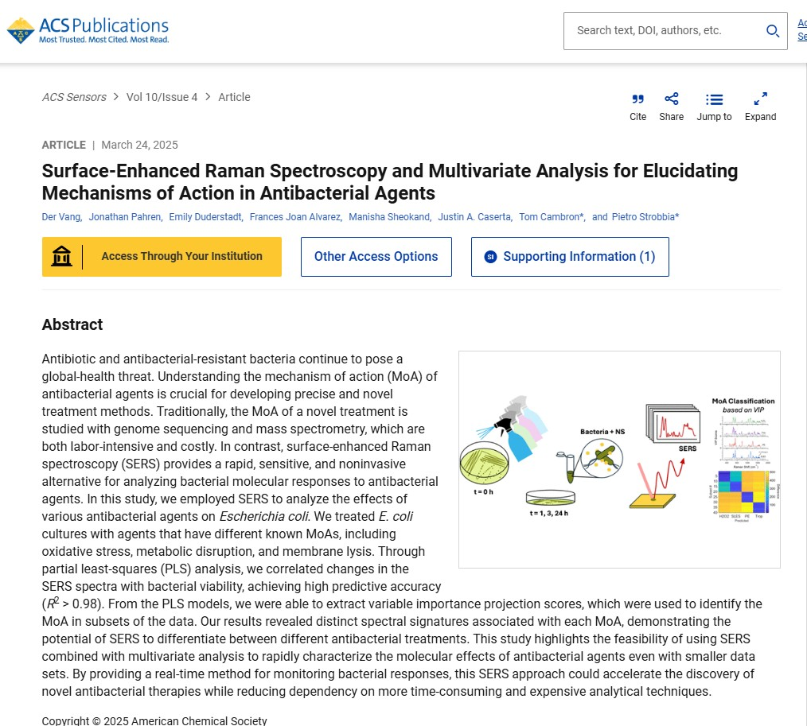

First author
SERS
Multivariate
Surface-enhanced Raman spectroscopy (SERS) and multivariate analysis for elucidating mechanisms of action in antibacterial agents
ACS Sensors · 2025
This study applies surface-enhanced Raman spectroscopy (SERS) with multivariate analysis to probe how bacteria respond to different antibacterial agents. By resolving the spectral changes each treatment produces, it helps distinguish mechanisms of action in a faster, lower-cost way than mass spectrometry or genome sequencing.
Read paper